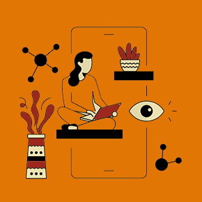
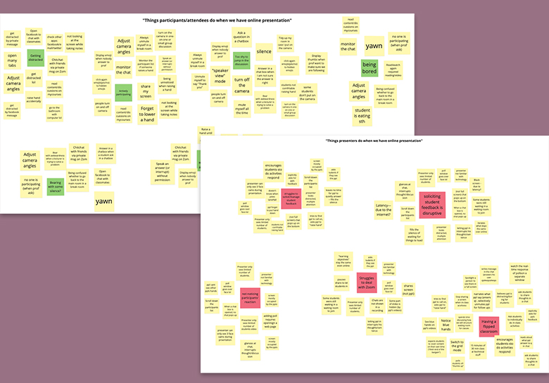
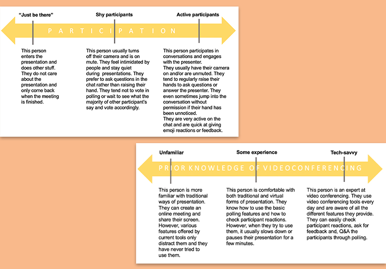
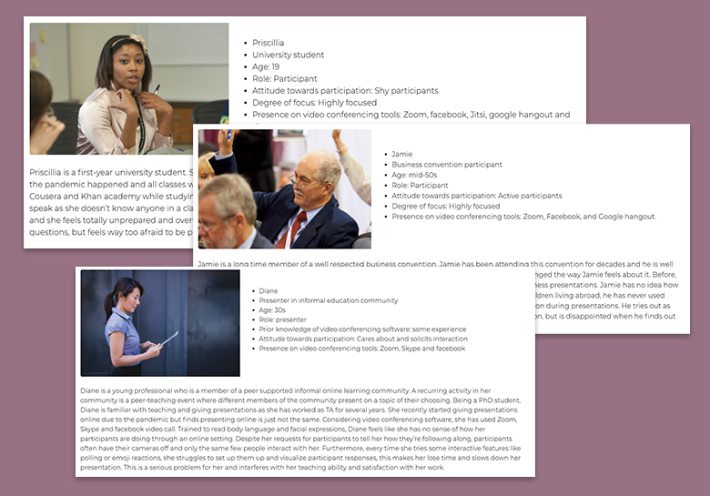

UX design case study - 2020
Video-conference for education

The project aims to improve the experience of educators and
students when having class via video-conferencing softwares. We
want to create an interface that connects educators and
students.
My role
UX researcher and UX designer
Tools
Figma, Adobe XD, Miro, Slack and Zoom
Discover
Observation
Through several participants observation sessions, we defined
problems that students are currently facing in a virtual
educational environment.
The inability for presenters and participants to engage and have
dialogue with one another is a major issue with video
conferencing. The lack of low risk, non-disruptive,
simple-to-use features that allow participants to comfortably
engage with presentations results in lower levels of engagement.
This lack of engagement is especially troublesome for
presentations with educational objectives as engagement is a
necessary component for learning.

Competitive analysis
While many software had features that engage participants, no
software provided any features for participants to react and
engage in a presentation without garnering overwhelming
attention and/or being disrupting, while still being easily
visible to the presenter.
Via our proposed system, presenters will be able to interpret
participant engagement with ease through our proposed real time
visualization and aggregation of participant’s reactions and
responses This eliminates the need for presenters to switch to
different tabs or change the view mode to engage more
comfortably with participants.
Design for
Everyone
is
Design for
No One
Define
Mental Model
Based on findings from participants observation, we defined the
mental model for "having an online class on video conferencing
tools" to select groups of people whom we want to focus on to
provide a tailored experience to users.
We listed distinguishing tasks and grouped them where there is
behavior affinity. At this stage, we defined actors, named the
groups (actors) and wrote an description.
We listed distinguishing tasks and grouped them where there is
behavior affinity. At this stage, we defined actors, named the
groups (actors) and wrote an description.


Persona
Based on the task-based audience segments, we defined three
personas.
In order to keep it manageable within the allotted time frame,
we selected core groups to focus for this project.
For presenters, we decided to target those with low and medium
prior knowledge of video-conferencing tools , as well as those
who look forhigh participation from their audience. For
participants, we targeted both shy and active participants that
are focused on the presentation.
Explore
..and iterative, iterative and iterative!
Via Zoom (in order to be familiar with remote UX processes), we
carried out the 10 plus 10 method of generating design concepts.
First, we didn’t constrain the technology feasibility and the layout
of our possible designs, rather we explored all possible design
options.
After several sessions, we settled on a single column interface
which doesn’t incorporate video conferencing tools. We wanted our
system to be used by anyone, no matter their choice of
video-conferencing platform. From that, we generated many ideas
about the style and format of the interface, namely where key
features like raising hand or emoting would go.
It wasn't easy to make some design decisions!
We loved all our designs and wanted to have all the features.
However, we had to make some decistoins to get the design right! We
bounced our ideas off each other with sketches and conducted the
usability testing with our paper prototypes!
Develop
Design Evolution and High-fidelity Prototypes
The design has undergone some revision in light of the feedback we
had received from the usability testing with our paper prototype.
Therefore, based on findings from the usability testing with our
paper prototypes, we created the high-fidelity prototypes with
Figma.
There are several design evolution from low-fi prototypes;
1) clear labelling on each section, 2)
"clear the queue/result" button (short-cut for the
interaction),
3)
improved visualization of the "level of understanding graph" and 4) constraints on the self-reported understanding bar.